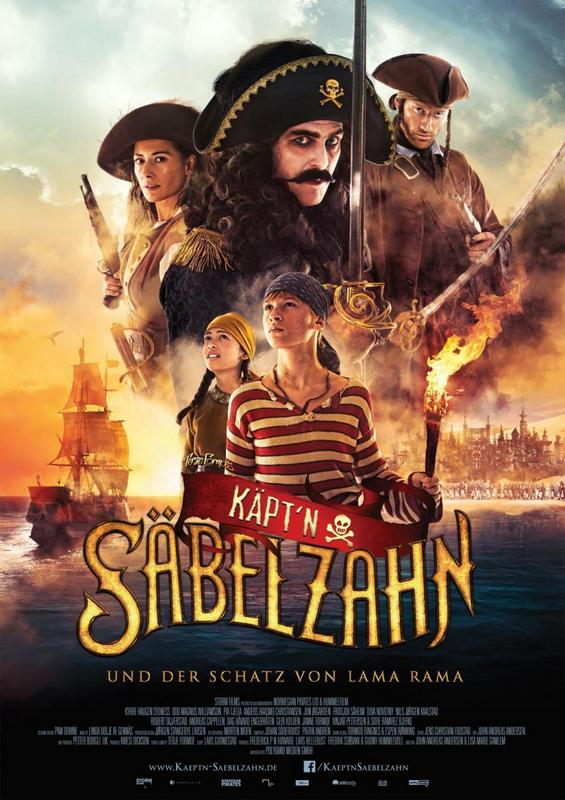

Käpt’n Säbelzahn und der Schatz von Lama Rama (© Polyband / 24 Bilder)
Termin: 07.05.2015
Genre: Abenteuer, Familie
Nationalität: Norwegen
Homepage: http://kaeptn-saebelzahn.de/
Kapitän Säbelzahn (Kyrre Haugen Sydness) tut das, was Kapitäne nun mal tun, er sticht in See! Mit dabei: der Waisenjunge Pinky (Vinjar Pettersen) und seine Freundin Raven (Sofie Bjerke). Säbelzahns Schiff, die Dark Lady, soll sie gemeinsam von der Piratenhochburg Abra Harbour ins Abenteuer fahren. Sie steuern das legendäre und exotische Königreich des Lama Rama an. Mit vereinten Kräften überqueren sie die tückische See, kämpfen gegen riesige Wellen an und schlagen sich durch den tiefsten Dschungel. Natürlich mit Grund: Sie suchen den Schatz von König Rufus (Anders Baasmo Christiansen). Aber Pinky hat mehr im Sinn als nur Silber, Gold und Juwelen. Er ist auch auf der Suche nach der Wahrheit über seinen verschollenen Vater und nach seinem ganz eigenen Platz im Leben.